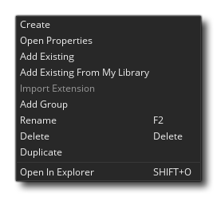
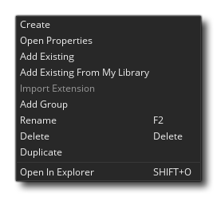

El núcleo de tu juego se creará a partir de los activos agregados al árbol de recursos. Aquí es donde puedes agregar todo lo que tu juego requiere para ejecutar, incluyendo una sala de juegos, sprites, objetos, caminos y un número de otras cosas. Un juego básico en GameMaker Studio 2 requerirá una sala para correr, y generalmente al menos un objeto y un sprite, ¡aunque es probable que uses mucho más!  Puede agregar un recurso al árbol de recursos haciendo clic con el botón derecho
Puede agregar un recurso al árbol de recursos haciendo clic con el botón derecho  y seleccionando la opción Crear en el menú emergente (para más detalles sobre este menú emergente, ver a continuación). Esto es lo mismo para todos los recursos disponibles, pero cada uno tiene su propio editor único que se abrirá cuando hagas esto. Tenga en cuenta que en la esquina superior izquierda del Árbol de recursos tiene el botón Contraer todo
y seleccionando la opción Crear en el menú emergente (para más detalles sobre este menú emergente, ver a continuación). Esto es lo mismo para todos los recursos disponibles, pero cada uno tiene su propio editor único que se abrirá cuando hagas esto. Tenga en cuenta que en la esquina superior izquierda del Árbol de recursos tiene el botón Contraer todo  que se puede usar para cerrar todas las carpetas de recursos abiertas.
que se puede usar para cerrar todas las carpetas de recursos abiertas.
Puede ver una breve descripción de cada uno de los recursos disponibles del árbol de recursos haciendo clic en cualquiera de los botones a continuación:
Los Sprites son generalmente las representaciones visuales de los objetos dentro de los juegos que creas. Como tal, un sprite es una imagen dibujada usando el Editor de imágenes GameMaker Studio 2, o hecha con cualquier programa de dibujo externo e importada a GameMaker Studio 2. La imagen utilizada no tiene por qué ser una cosa estática tampoco... también puede ser una imagen de "tira", es decir: múltiples imágenes en un único archivo que luego se puede usar para crear un solo sprite animado. Por ejemplo, las siguientes 10 imágenes forman un sprite para un personaje que agita los brazos mientras practica paracaidismo.
Y la animación final real se vería así cuando se coloca en un juego:
Un sprite como este suele ser un PNG formato de archivo, pero GameMaker Studio 2 también aceptará sprites vectoriales en SWF formato, y Sprites columna vertebral en JSON (con su archivo atlas de textura).
Puede obtener más información sobre cómo agregar sprites desde la sección en el Editor de Sprite.
Los juegos de fichas se toman de los recursos de sprites, pero se clasifican como un recurso separado, ya que GameMaker Studio 2 los manejará de forma diferente al crear su juego. Básicamente, un conjunto de mosaicos es una imagen única que GameMaker Studio 2 dividirá en secciones separadas en función de los valores que proporcione para las diversas configuraciones. A continuación, puede usarlos en el editor de sala (o en el código de procedimiento) para generar un mapa de mosaico en su habitación. Son ideales para diseñar elementos estáticos en su habitación, como el terreno, las paredes, los telones de fondo, etc., ya que no tienen la misma sobrecarga que tienen los objetos.
Arriba está un ejemplo de sprite que se usaría como un conjunto de mosaicos para crear muros. Como puede ver, se puede "dividir" en trozos de 64x64 píxeles, que luego se colocarán en el editor de la sala.NOTA: Los mosaicos siempre son cuadrados, por lo que si necesita algo más que eso, debe usar una instancia con un sprite o una capa de activos en el editor de sala.
Puede obtener más información sobre cómo agregar conjuntos de mosaicos desde la sección en el Editor de conjuntos de mosaicos.
El sonido es una parte importante de cualquier juego, tanto para agregar "depoth" a la jugabilidad como para proporcionar comentarios en forma de efectos de sonido y para agregar atmósfera en forma de música. GameMaker Studio 2 acepta WAV, MP3 y OGG archivos de formato.
En general, WAV los archivos se usan para cualquier efecto de sonido breve ya que, aunque generalmente son archivos más grandes, se reproducirán instantáneamente debido a que no necesitan ningún tipo de decodificación para la reproducción. MP3 y OGG los archivos deben usarse para música de fondo o cualquier efecto que se reproduzca durante un período de tiempo más largo o que tenga un tamaño de archivo bastante grande. Estos archivos son mucho más pequeños que WAV archivo y pero tienen una sobrecarga de CPU asociada a ellos, ya que tienen que decodificarse antes de reproducirse.
Puede encontrar más información sobre cómo agregar sonidos en la sección del Editor de sonido.
En algún momento mientras crea sus juegos, es posible que necesite una instancia de uno de sus objetos para seguir un camino a través de un nivel. Ahora, esto se puede hacer simplemente creando una serie de posiciones dentro de la sala y luego haciendo que la instancia se mueva entre ellas, pero eso puede ser una tarea difícil de configurar y es difícil de cambiar, probar y adaptar para diferentes cosas. Es entonces cuando querrías crear un recurso de ruta.
La idea básica del recurso de ruta es bastante simple: usted define una ruta dibujándola en el editor de ruta, luego puede colocar una acción (o código) en un evento de un objeto para decirle al objeto que siga esa ruta particular en el sala de juego. Puede configurar la velocidad para seguir la ruta y una serie de otras acciones relacionadas con la posición y la orientación de la ruta dentro de la sala también.
Puede encontrar más información sobre cómo agregar rutas desde la sección en el Editor de rutas.
Un recurso de script es una colección de códigos que ha escrito para crear su propia función. Por ejemplo, supongamos que quieres que un enemigo cree un número de instancias cuando muere, como oro, una explosión y un poco de sangre, además de reproducir un sonido. Ahora podría agregar todo el código requerido en cada objeto que lo requiera, pero en general sería mejor crear un único recurso de script con el código y luego llamarlo. Esto significa que solo tiene que agregar una línea de código en los objetos para llamar a esta nueva función con guiones, y si desea cambiar algo, solo necesita cambiarlo una vez en el guión y todos los objetos ejecutarán automáticamente el nuevo código. en lugar de tener que pasar por cada objeto y cambiar la misma cosa en múltiples lugares.
Puede obtener más información sobre cómo agregar rutas desde la sección en el Editor de secuencias de comandos.
Los sombreadores son una herramienta muy poderosa que se puede utilizar para manipular los gráficos que su juego rinde a la pantalla, permitiendo efectos increíblemente rápidos que pueden ir desde, por ejemplo, agregar un matiz de color sutil a un sprite, hasta efectos de distorsión de pantalla completa. Básicamente se trata de un programa de dos partes que se ejecuta directamente en la tarjeta gráfica en sí, lo que hace que sea muy rápido ya que la GPU está haciendo todo el trabajo y liberando los ciclos de la CPU para su código de juego. El sombreador completo está compuesto por un programa de sombreado de vértices y un programa de sombreado de fragmentos (también conocido como sombreador de píxeles). Ambos pequeños programas trabajan juntos para manipular lo que la tarjeta gráfica representa en la pantalla. Esto le permite manipular en tiempo real la posición, el color y los valores alfa que realmente se representan en el búfer de visualización.
GameMaker Studio 2 compatible con los siguientes lenguajes de sombreado:
Shader Language Plataforma de destino GLSL ES Todas las plataformas de destino GLSL Mac y Ubuntu (Linux) HLSL11 Windows, UWP, XboxOne PSSL Playstation 4
Puede encontrar más información sobre cómo agregar sombreadores en la sección del Editor de sombreadores.
Cuando quiera dibujar texto en su juego, este texto se dibujará en una fuente estándar Arial de 12 puntos por defecto, pero para hacer textos más interesantes o únicos, probablemente quiera usar diferentes tipos de letra. Aquí es donde se usa el editor de fuentes. Aquí puede seleccionar una fuente que tenga en su computadora e importarla a GameMaker Studio 2 para usarla en su juego, estableciendo varios atributos como tamaño y peso o estilo. Una vez importado y agregado como recurso, puede configurarlo para dibujar usando el código o las acciones apropiadas.NOTA: Si agrega fuentes a su juego, asegúrese de tener la licencia necesaria para volver a distribuirlo, a menos que sea de dominio público o libre de derechos de autor.
Puede encontrar más información sobre cómo agregar fuentes desde la sección en el Editor de fuentes.
En la mayoría de los juegos, querrás que sucedan ciertas cosas en determinados momentos. Ahora, puede tratar de lograr esto utilizando los eventos de alarma en una instancia, pero cuando las cosas se vuelven demasiado complicadas, esto no funcionará más, especialmente porque está limitado a solo doce alarmas. Es por eso que tenemos el recurso de línea de tiempo. En una línea de tiempo, usted especifica qué acciones deben suceder en cualquier momento específico en el tiempo del juego, y puede usar todas las acciones disponibles para un objeto en sus diferentes eventos, así como el código. Una vez que crea una línea de tiempo, puede asignarla a un objeto, y la instancia de ese objeto ejecutará las acciones y el código en los momentos indicados cuando se coloque o se cree dentro de una habitación.
Puede encontrar más información sobre cómo agregar líneas de tiempo en la sección del Editor de línea de tiempo.
Los objetos son un recurso especial que utilizamos para controlar aspectos de un juego y para hacer cosas específicas. La mayoría de las veces tienen un sprite asociado con ellos para que los veas en la sala de juegos, pero a veces se usan como un controlador "entre bastidores" para hacer cosas relacionadas con el usuario o para cronometrar, etc. se les pueden dar comportamientos y pueden reaccionar a ciertos eventos, así como a los demás, y la mayoría de las cosas que ves en un juego se basan en los objetos y sus interacciones. Tenga en cuenta que decimos "basado en" porque en realidad no coloca objetos directamente en la sala de juegos, sino que coloca instancias de estos objetos, que son básicamente copias (o clones, si lo prefiere) del recurso del objeto. Esto es algo muy importante de recordar ya que las instancias y los objetos no son lo mismo y cada uno tiene su propio conjunto de funciones que pueden afectarlos.
Todos los objetos tienen un conjunto de propiedades que puede especificar en el editor de objetos, como el sprite, si usa física o no, o si es un objeto "secundario" de otro. También tienen una serie de variables integradas que luego pueden usarse en acciones, scripts y códigos. Estas variables integradas se utilizan para definir la posición de la instancia cuando se coloca en la sala de juegos, la velocidad de la animación, la dirección del movimiento y una gran cantidad de otras cosas. Para controlar cómo se comporta el objeto en el tiempo, cada cuadro de juego se divide en una serie de eventos, por lo que puede agregar código o acciones en un evento específico y solo se ejecutará cuando se desencadene el evento, y los eventos pueden desencadenarse por cosas como presiona el botón del mouse o colisiones con otras instancias.
Los objetos son, en un sentido muy real, los pilares de tu juego, y junto con las habitaciones formarán el núcleo de cualquier proyecto que crees.
Puede encontrar más información sobre cómo agregar objetos desde la sección en el Editor de objetos.
Todos los juegos que realizas en GameMaker Studio 2 necesitan al menos una sala para ejecutarse (pero puede tener muchos, muchos más), y una sala es básicamente un espacio en el que colocas instancias de los objetos que componen tu juego y donde la acción de el juego tendrá lugar. Sin embargo, el Editor de habitaciones es uno de los recursos más potentes disponibles para ti, ya que te permite no solo agregar instancias de objetos, sino configurar la "vista" en la sala de juegos, agregar los fondos y las fichas que se dibujan en crea el mundo del juego, crea efectos especiales adicionales que son independientes del sistema objeto / instancia, y también ejecuta código independientemente de un objeto. Las habitaciones también se pueden configurar para heredar propiedades de otras habitaciones, lo que significa que puede crear una habitación individual con una carga de mosaicos, por ejemplo, y luego crear otra habitación que herede estos mosaicos, para que no tenga que volver a crear ellos de nuevo.
Puede obtener más información sobre cómo agregar salas desde la sección del Editor de la sala.
Las notas son simplemente ventanas de edición de código que te permiten escribir cualquier cosa. Están diseñados como un lugar para guardar fragmentos de código, información del juego, listas de tareas, comunicaciones del equipo, etc.
Puede encontrar más información sobre cómo agregar notas en la sección del Editor de Notas.
Los archivos incluidos son, como su nombre indica, cualquier archivo que desee incluir con el paquete del juego cuando exporte el juego a la plataforma de destino. Estos archivos pueden ser cualquier cosa, desde documentos de texto a imágenes, a archivos comprimidos y se puede acceder utilizando las diversas funciones de archivo, siguiendo las reglas definidas por el sistema de archivos.
Puede encontrar más información sobre cómo agregar archivos desde la sección Archivos incluidos.
Las extensiones son archivos y códigos adicionales que puede agregar para ampliar la funcionalidad de GameMaker Studio 2 y agregar recursos a su juego desde Marketplace. El formato de una extensión variará dependiendo de la plataforma objetivo final, aunque en general están escritos en C ++, C # o JavaScript, que luego se analiza utilizando funciones específicas en GML.
Puede encontrar más información sobre cómo agregar extensiones en la sección del Editor de extensiones.
El recurso Opciones de juego está compuesto por una serie de opciones diferentes para el proyecto en su conjunto y para cada plataforma de destino a la que desea exportar. Independientemente de las plataformas que tenga disponibles, siempre tendrá un recurso de opción de juego principal para configurar cosas específicas del proyecto, como la velocidad del juego. Para obtener más información, consulte la sección sobre las Opciones del juego.
Aquí puede elegir o crear una configuración que desee usar para el árbol de recursos y, posteriormente, para todo su proyecto. Al comenzar, las configuraciones pueden no ser tan importantes, pero a medida que crezca la complejidad y la cantidad de plataformas de destino proyectadas, descubrirá que son una herramienta invaluable para organizar y exportar correctamente sus juegos. Básicamente, guardan la configuración actual de las diferentes opciones de juego y las opciones de exportación para el árbol de recursos, lo que significa que puede tener una configuración específica para Android, otra para Windows, etc.... Para obtener más información, consulte la página sobre Configuraciones.

Si desea una guía más detallada sobre cómo usar los diferentes editores enumerados aquí, entonces debe consultar la sección del manual que los explica con más detalle aquí:
Menú de RMB
Al trabajar con el árbol de recursos, puede usar el botón derecho del mouse  en cualquier recurso o carpeta para abrir un menú de opciones:  Las opciones disponibles para usted son:
en cualquier recurso o carpeta para abrir un menú de opciones:  Las opciones disponibles para usted son:
- Crear: crea un nuevo recurso del tipo en el que has hecho clic para abrir el menú.
- Abrir propiedades: abra el editor de propiedades de recursos para el recurso cliqueado (tenga en cuenta que puede hacer doble clic en
 también).
también). - Agregar existente: agregue un recurso existente de una carpeta de proyecto de GameMaker Studio 2 diferente.
- Agregar existente desde mi biblioteca: agregue recursos al árbol desde un activo en su biblioteca de Marketplace.
- Importar extensión: importe una extensión a su proyecto (solo disponible en el recurso Extensiones ).
- Agregar grupo: agregue una nueva carpeta de Grupo de recursos al árbol en la posición en la que se hace clic.
- Cambiar nombre: cambie el nombre del recurso o la carpeta del grupo.
- Eliminar: elimine el recurso del proyecto (esto lo eliminará por completo, a menos que esté en una vista de proyecto que no sea el predeterminado, ver más abajo).
- Duplicar: crea un duplicado del recurso en el que se ha hecho clic.
- Abrir en Explorer: se abrirá el explorador de archivos en la ubicación del archivo que se ha almacenado para el recurso en la carpeta del proyecto.
Tenga en cuenta que no todas las opciones estarán disponibles para todos los recursos y dependerá del tipo de recurso o la carpeta en cuanto a cuáles puede usar.
Vistas del proyecto
Hay una sección en la parte superior del árbol de recursos titulada Vistas que le permite configurar uno o más árboles de recursos personalizados para mostrar solo las partes del proyecto en las que desea trabajar a la vez, o para organizar su proyecto en una de diferente manera, por ejemplo por nivel. La vista predeterminada es el diseño del árbol de recursos estándar descrito anteriormente, pero tiene dos opciones para crear vistas nuevas según lo que necesite:
| Esto creará una nueva vista del árbol de recursos clonado desde la vista seleccionada previamente. Por lo tanto, si hace clic en esta en la vista predeterminada, por ejemplo, se creará una copia exacta para que la edite. | |
| Esto creará una nueva vista del árbol de recursos sin recursos agregados (es decir, una vista en blanco). A continuación, puede usar el menú del botón derecho del mouse (consulte a continuación) para agregar recursos y organizarlos como lo desee. |
Al utilizar cualquier vista de proyecto que no sea la predeterminada, puede arrastrar y soltar recursos donde lo desee y renombrar carpetas para que sea lo que usted desee. De esta forma, puede configurar una vista del árbol de recursos que se adapte a sus necesidades. Por ejemplo, supongamos que tienes un juego de plataforma con múltiples mundos: puedes crear una "Vista mundial" del árbol de recursos con carpetas llamadas "Mundo 1", "Mundo 2", etc.... y luego arrastrar los sprites, tilesets, instancias y salas asociadas a cada mundo en las carpetas requeridas. O di que trabajas en equipo y quieres tener una "Vista de artistas", por lo que creas un árbol de recursos de reducción que solo muestra los sprites, las instancias y las salas.
También puedes eliminar vistas usando el botón  (Esto no está disponible para la vista predeterminada) y las vistas pueden renombrarse simplemente haciendo clic en el nombre e ingresando el nuevo nombre que necesita. Tenga en cuenta que el botón derecho del mouse
(Esto no está disponible para la vista predeterminada) y las vistas pueden renombrarse simplemente haciendo clic en el nombre e ingresando el nuevo nombre que necesita. Tenga en cuenta que el botón derecho del mouse  el menú de los recursos que no están en la vista predeterminada es ligeramente diferente y tiene las siguientes opciones:
el menú de los recursos que no están en la vista predeterminada es ligeramente diferente y tiene las siguientes opciones:  La mayoría de las opciones son obvias, pero se debe aclarar que Create le permitirá crear un nuevo recurso en cualquier lugar dentro de la vista personalizada del proyecto (se agregará a la carpeta de recursos correcta en la vista predeterminada del árbol de recursos), y Agregar desde vista predeterminada le permitirá transferir un recurso desde el árbol de recursos predeterminado a la vista personalizada. Esto no será necesario si clona la vista predeterminada, ya que todos los recursos actuales estarán en ella para comenzar, pero si usa una vista en blanco o usa la opción Eliminar botón derecho del mouse para eliminar el elemento de la vista nueva, tendrá que volver a agregarlo más tarde si es necesario. Tenga en cuenta que el uso de Eliminar no elimina el recurso del proyecto y seguirá estando visible en el árbol de recursos predeterminado, que es la vista que debería utilizar si desea eliminar el recurso por completo y no solo desde la vista.
La mayoría de las opciones son obvias, pero se debe aclarar que Create le permitirá crear un nuevo recurso en cualquier lugar dentro de la vista personalizada del proyecto (se agregará a la carpeta de recursos correcta en la vista predeterminada del árbol de recursos), y Agregar desde vista predeterminada le permitirá transferir un recurso desde el árbol de recursos predeterminado a la vista personalizada. Esto no será necesario si clona la vista predeterminada, ya que todos los recursos actuales estarán en ella para comenzar, pero si usa una vista en blanco o usa la opción Eliminar botón derecho del mouse para eliminar el elemento de la vista nueva, tendrá que volver a agregarlo más tarde si es necesario. Tenga en cuenta que el uso de Eliminar no elimina el recurso del proyecto y seguirá estando visible en el árbol de recursos predeterminado, que es la vista que debería utilizar si desea eliminar el recurso por completo y no solo desde la vista.
Ahora debe tener una idea de cuáles son los recursos básicos disponibles para hacer sus juegos, así que seguiremos adelante y echaremos un vistazo al flujo de trabajo general al usar GameMaker Studio 2 y comenzar un nuevo proyecto.